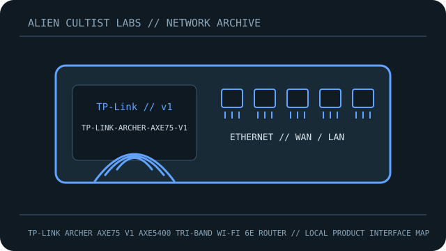

[ MODEL-SPECIFIC NETWORK HARDWARE RECORD ]
TP-Link Archer AXE75 V1 AXE5400 Tri-Band Wi-Fi 6E Router
V1 router with tri-band Wi-Fi 6E and five Gigabit Ethernet ports.

IDENTIFICATION: Confirm exact model, revision, regulatory region and product label. Link rates are manufacturer maximum PHY/link specifications, not measured payload throughput; features depend on firmware and client capability.
Model-specific specifications and compatibility
| Subcategory | Network appliances: routers & access points |
|---|---|
| Exact product/model | TP-Link Archer AXE75 V1 AXE5400 Tri-Band Wi-Fi 6E Router |
| Ethernet ports and rates | 1x2.5GbE WAN/LAN, 1x1GbE WAN/LAN, 3x1GbE LAN; USB 3.0. |
| Wi-Fi bands and standards | IEEE 802.11a/b/g/n/ac/ax Wi-Fi 6E: 2.4GHz 2x2 574Mb/s; 5GHz 2x2 2402Mb/s; 6GHz 2x2 2402Mb/s, Wi-Fi 6E. |
| Streams and nominal-rate interpretation | 6 streams; AXE5400 aggregate PHY class. |
| Antenna system | Six fixed high-performance external antennas on V1 configuration; confirm regional datasheet. |
| Management, firmware and security updates | TP-Link web/Tether, HomeShield and WPA3. V1 regional firmware/security releases; verify hardware revision before updates. |
| Power | 12V 2A (24W) adapter. |
| Compatibility | Wired ports max 1Gb/s; 6GHz/WPA3 require clients and permitted channels. |
| Revision / variant | Exact hardware V1; do not flash V2/V3 or different-region firmware. |
Revision, management and deployment notes
Revision/variant: Exact hardware V1; do not flash V2/V3 or different-region firmware.
Firmware/security updates: TP-Link web/Tether, HomeShield and WPA3. V1 regional firmware/security releases; verify hardware revision before updates.
Power: 12V 2A (24W) adapter.
Compatibility: Wired ports max 1Gb/s; 6GHz/WPA3 require clients and permitted channels.
No throughput or range benchmark is claimed. For testing, record firmware, client, channel, topology and method.
Safety and preservation
Retain adapter/PoE labels and regional SKU, record firmware provenance and remove power before servicing. Do not publish credentials, serial numbers, MAC addresses or private network details.
Manufacturer sources and manuals
- TP-Link product specificationsManufacturer specification source for the model.
- TP-Link V1 firmware/manual and region guidanceOfficial manufacturer support, firmware, installation or manual resource.
Use exact model/revision and purchase-region documentation for firmware and regulatory decisions.